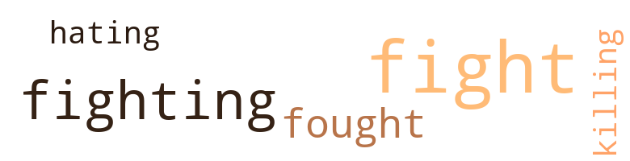

Boy Who Cursed God, by Rudolph, Christopher (1975)
1 music-related terms matched in this text.
Most frequent terms in this topic: section (1)
section.n.01
Definition: a self-contained part of a larger composition (written or musical)
| word | sentence |
|---|---|
| section | For what she thought was best , she decided to move to another section of the country . |
16 violence-related terms matched in this text.
Most frequent terms in this topic: fight (7); fighting (3); fought (2); killing (1); fights (1)
fight.n.02
Definition: the act of fighting; any contest or struggle
| word | sentence |
|---|---|
| fighting | She did n't only find he had been doing a lot of fighting , but also that he had formed a gang which was doing a lot of damage to the school . |
| fighting | She also told him that there was no use of him lying because she had already been told about the fighting . |
| Fighting | Fighting the Klan and all of the whites with a strong educational mind , was the boy 's intention , but several months after entering the tenth grade , all of the intentions had changed . |
fight.n.05
Definition: a boxing or wrestling match
| word | sentence |
|---|---|
| fights | " Always be good , study hard , play with others , listen to the teacher , do n't steal , do n't lie , obey the rules and do n't get into fights , " his mother told him . |
| fight | For a short while , it seemed as though the others had forgotten about bothering the boy , but they had n't , because one of the other boys picked a fight with him and lost . |
| fight | There was one thing wrong - that one fight was n't his last . |
| fight | Whatever the talk did it was n't much , because the very next day the boy had another fight which started when a boy from the fourth grade called him a black bastard . |
| fight | It was inside the hall where the fight took place . |
| fight | It was a savagely fought fight , and as usual the lady 's son had won the fight . |
| fight | It was a savagely fought fight , and as usual the lady 's son had won the fight . |
fight.v.02
Definition: fight against or resist strongly
| word | sentence |
|---|---|
| fought | He had fought several times before his mother found out what was going on . |
| fought | It was a savagely fought fight , and as usual the lady 's son had won the fight . |
| fighting | If at times the boy was n't somewhere fighting someone , he was either setting woods afire or breaking into some family 's home and stealing whatever he could carry . |
| fight | He told his friends and cousins that he was going to learn all he could , because when he got big , he wanted to be able to fight the Klan and all of the whites with a strong educational mind . |
hate.v.01
Definition: dislike intensely; feel antipathy or aversion towards
| word | sentence |
|---|---|
| hating | During the year 1970 , he told some friends that he could n't understand how he stopped stealing , lying , and hating , and yet was still unable to overcome his destructive thinking . |
kill.v.10
Definition: cause the death of, without intention
| word | sentence |
|---|---|
| killing | " Mama , you are killing me , please stop ! |
9 religion-related terms matched in this text.
Most frequent terms in this topic: God (5); church (2); angel (1); religion (1)
church.n.02
Definition: a place for public (especially Christian) worship
| word | sentence |
|---|---|
| church | After she was sick for three weeks , he along with one of his cousins went to a little country church and got the religion one warm night during the summer . |
| church | The boy just stood there and when he did n't answer , the man told the boy , " I go to church every Sunday and pray to God for peace and then you have to come along and throw fire-crackers down my chimney . " |
god.n.03
Definition: a man of such superior qualities that he seems like a deity to other people
| word | sentence |
|---|---|
| God | With a pleasant-sounding voice , the man told the boy that God did n't like people to act the way he was acting , so the boy said , " Mother-fuck God . " |
| God | While looking worried , the friend went and gently grabbed the boy by his arm and told him that God does n't like people to act unfriendly . |
| God | " Because when I told him that God did n't like for people to act unfriendly , he said ' Mother-fuck God . ' " |
| God | The boy just stood there and when he did n't answer , the man told the boy , " I go to church every Sunday and pray to God for peace and then you have to come along and throw fire-crackers down my chimney . " |
| God | " I do n't want to ever hear of you saying mother-fuck God again , " the mother said , after she stopped beating him and while he was still crying . |
religion.n.01
Definition: a strong belief in a supernatural power or powers that control human destiny
| word | sentence |
|---|---|
| religion | After she was sick for three weeks , he along with one of his cousins went to a little country church and got the religion one warm night during the summer . |
saint.n.02
Definition: person of exceptional holiness
| word | sentence |
|---|---|
| angel | During the next several months , the boy was like an angel . |